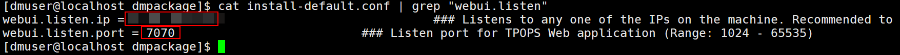
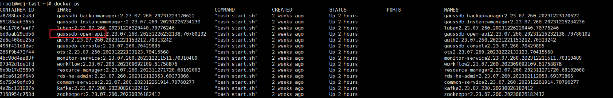

Before GaussDB is registered with the product, you need to obtain the management plane IP address and port which are used by TPOPS to provide services for external systems. You can obtain the management plane IP address and port by performing the following steps.
Procedure
- If OLTP OPS is used as the management platform, perform the following steps:
- Log in to the node where the TPOPS server is installed as user root.
- Run the following commands in sequence to switch to account dmuser and go to the software package directory:
su - dmuser; cd ~/dmpackage
- Run the following command to check the management plane address and port:
cat install-default.conf | grep "webui.listen"
The following is an example of the command output (the value of webui.listen.ip indicates the management plane address, and the value of webui.listen.port indicates the management plane port):

- If the cloud database GaussDB management platform is used, perform the following steps:
- Log in to the background page of any node of the cloud database GaussDB management platform.
- Run the docker ps command to query the image name with the gaussdb-open-api prefix and record the value of CONTAINER ID.

- Run the following command with CONTAINER_ID set to the parameter value recorded in 2:
docker exec -it CONTAINER_ID /bin/bash
- Run the cd /opt/cloud/GaussDB-open-api/conf cat server.xml | grep "port" command to check the management plane address and port, as shown in the following figure.